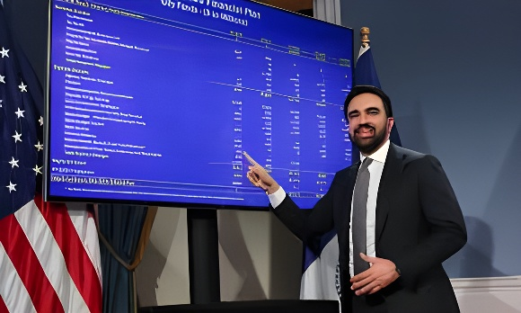

Le 12 mai 2026, le maire de New York Zohran Mamdani annonce la fermeture totale d'un déficit de 12 milliards de dollars hérité de l'administration Adams — le plus grand depuis la Grande Récession. Sans couper les services, sans puiser dans les réserves, sans augmenter la taxe foncière, il boucle un budget exécutif de 124,7 milliards de dollars pour l'exercice 2027. L'équation repose sur une combinaison inédite : économies internes, aide de l'État, taxation des résidences secondaires de luxe et restructuration de la dette des retraites. Une démonstration que scrutent gouvernements et économistes au-delà de Manhattan.
Le 28 janvier 2026, six semaines après son entrée en fonctions, Mamdani convoque la presse pour annoncer une "crise budgétaire" : son administration vient d'identifier un déficit de 12 milliards de dollars couvrant les exercices 2026 et 2027, résultat, dit-il, d'une pratique systématique de sous-budgétisation des services essentiels par son prédécesseur Eric Adams — aide au logement, hébergement d'urgence, éducation spécialisée. Les contrôleurs budgétaires de la ville et de l'État corroborent l'analyse. L'ampleur du trou dépasse les déficits de la crise de 2008.
En février, le maire présente un budget préliminaire de 127 milliards de dollars qui soulève immédiatement la controverse : pour faire pression sur Albany, il brandit la menace d'une hausse de la taxe foncière de 9,5 % — une mesure qui affecterait plus de 3 millions de ménages new-yorkais — si le gouverneur Hochul refuse de taxer les ultra-riches. L'ultimatum est politique : Mamdani ne veut pas augmenter la taxe foncière, mais entend forcer la main de l'État. La manœuvre fonctionne en partie.
Le 15 avril 2026, Mamdani et la gouverneure Kathy Hochul annoncent conjointement la première taxe pied-à-terre de l'histoire de l'État de New York. La mesure frappe les résidences secondaires — maisons, condominiums et coopératives — d'une valeur supérieure à 5 millions de dollars dont les propriétaires résident hors des cinq boroughs. Le surcharge annuel est estimé à 500 millions de dollars de revenus pour la ville. Mamdani poste une vidéo devant la tour où le gestionnaire de fonds spéculatifs Ken Griffin possède un penthouse acheté 239 millions de dollars : "Quand j'ai fait campagne, j'ai dit que j'allais taxer les riches." La vidéo dépasse 52 millions de vues sur X.
La mesure jouit d'un soutien populaire massif — 93 % des New-Yorkais selon un sondage cité par la mairie. Elle représente néanmoins un compromis : Mamdani souhaitait initialement une hausse générale de l'impôt sur le revenu des plus aisés, que Hochul, en campagne pour sa réélection, a refusé d'avaliser. Le pass-through entity tax — qui permettait à certains cadres de compenser intégralement leur impôt personnel via leur fiscalité d'entreprise — voit son avantage réduit de 100 % à 75 %, une mesure soutenue par l'Assemblée et le Sénat d'État.
Mamdani et Hochul annoncent la garde d'enfants universelle gratuite pour les enfants de 2 ans à New York City — programme baptisé 2-Care, financé 1,7 milliard sur deux ans par l'État.
Mamdani déclare l'état de "crise budgétaire" : déficit hérité estimé à 12 milliards de dollars pour FY2026 et FY2027, le plus élevé depuis la Grande Récession.
Budget préliminaire de 127 milliards. Mamdani brandit la menace d'une hausse de 9,5 % de la taxe foncière comme "dernier recours" si Albany ne taxe pas les ultra-riches.
L'Assemblée et le Sénat d'État proposent une série de hausses fiscales ciblées : extension de la "mansion tax" sur les ventes immobilières au-dessus de 5 millions, réduction du pass-through entity tax crédit, aide financière directe à la ville.
Accord Mamdani-Hochul : première taxe pied-à-terre de l'État, 500 millions de revenus annuels attendus sur les résidences secondaires de luxe (> 5 M$) des non-résidents des cinq boroughs.
Mamdani présente le budget exécutif de 124,7 milliards et annonce la fermeture totale du déficit : "Nous avons ramené l'écart entièrement à zéro." Pas de hausse de taxe foncière, pas de ponction sur les réserves.
Le Conseil municipal doit approuver le budget avant le 30 juin 2026. Le vote reste une étape incertaine : la présidente du Conseil Julie Menin a publié une contre-proposition divergente en avril.
Derrière le triomphe annoncé, les économistes pointent plusieurs fragilités. La restructuration du calendrier de remboursement des fonds de pension municipaux — repoussé de cinq ans, jusqu'en 2037 — génère 1,64 milliard d'économies immédiates mais transfère la charge vers les contribuables des années 2030. Andrew Rein, président du Citizens' Budget Commission, y voit "un artifice comptable" : "Nous demandons aux contribuables des années 2030 de financer le budget 2027." L'économiste Emily Eisner (Fiscal Policy Institute) conteste cette lecture, jugeant la mesure sans risque pour les retraités.
La dépendance vis-à-vis d'Albany reste la seconde vulnérabilité structurelle : 4 milliards de l'aide d'État sont encore soumis au vote du budget de l'État, dont l'adoption accuse déjà plusieurs semaines de retard. Sans ce vote, le budget new-yorkais ne peut être finalisé. Le projet Mamdani repose donc sur une alliance ville-État dont la solidité sera testée lors des futures négociations budgétaires — notamment en 2027, quand la gouverneure Hochul devra décider si elle pérennise les financements promis.
Le budget Mamdani dépasse le cadre de la gestion municipale : il constitue la première démonstration à grande échelle, dans une ville mondiale, de ce que le socialisme démocratique peut produire lorsqu'il accède au pouvoir exécutif. Déficit comblé sans austérité, garde d'enfants universelle financée, taxe sur la fortune immobilière inédite — et une popularité intacte. Mais l'équation reste fragile : elle dépend d'un accord avec l'État, d'un vote du Conseil municipal, d'un marché boursier qui a dopé les recettes fiscales, et d'un calendrier de retraites rallongé. Ce que Mamdani a prouvé, c'est qu'une autre arithmétique budgétaire est possible. Si elle tient dans la durée, elle redéfinira les contraintes supposées du progressisme au pouvoir.
On May 12, 2026, New York City Mayor Zohran Mamdani announced the complete elimination of a $12 billion deficit inherited from the Adams administration — the city's largest since the Great Recession. Without cutting services, raiding reserves, or raising property taxes, he balanced a $124.7 billion executive budget for fiscal year 2027. The equation rests on an unprecedented mix: internal savings, state aid, a first-ever tax on luxury second homes, and a restructured pension repayment schedule. A demonstration that governments and economists are scrutinising well beyond Manhattan.
On January 28, 2026, six weeks into office, Mamdani called a press conference to declare a "budget crisis": his administration had identified a $12 billion deficit spanning fiscal years 2026 and 2027, the result, he said, of systematic underfunding of essential services by predecessor Eric Adams — rental assistance, emergency shelter operations, special education. Both city and state comptrollers corroborated the finding. The gap exceeded any deficit recorded during the 2008 financial crisis.
In February, the mayor unveiled a preliminary budget of $127 billion that immediately sparked controversy: to pressure Albany, he threatened a 9.5% property tax increase — a measure that would affect more than 3 million New York City households — should Governor Hochul refuse to raise taxes on the ultra-wealthy. The ultimatum was political: Mamdani did not want a property tax hike but intended to force the state's hand. The tactic worked, in part.
On April 15, 2026, Mamdani and Governor Kathy Hochul jointly announced New York State's first ever pied-à-terre tax. The measure targets second homes — houses, condominiums, and co-ops — valued above $5 million whose owners live outside the five boroughs. The annual surcharge is expected to generate $500 million in revenue for the city. Mamdani posted a video outside the tower where hedge fund CEO Ken Griffin owns a penthouse purchased for $239 million: "When I ran for mayor, I said I was going to tax the rich." The clip surpassed 52 million views on X.
The measure enjoys massive popular support — 93% of New Yorkers according to a poll cited by City Hall. It nonetheless represents a compromise: Mamdani had initially sought a broad income tax hike on the wealthiest residents, which Hochul, running for reelection, refused to endorse. The pass-through entity tax credit — which allowed certain executives to fully offset personal income tax via business tax payments — was trimmed from 100% to 75%, a reform backed by both the Assembly and the Senate.
Mamdani and Hochul announce universal free child care for 2-year-olds in New York City — the 2-Care programme, funded $1.7 billion over two years by the state.
Mamdani declares a "budget crisis": an inherited deficit of $12 billion across FY2026 and FY2027 — the largest since the Great Recession, corroborated by both city and state comptrollers.
Preliminary $127 billion budget. Mamdani threatens a 9.5% property tax hike as a "last resort" if Albany refuses to tax the ultra-wealthy.
The State Assembly and Senate propose targeted tax increases: an extension of the "mansion tax" on real estate sales above $5 million, a reduction of the pass-through entity tax credit, and direct financial aid to the city.
Mamdani–Hochul deal: New York State's first pied-à-terre tax, expected to generate $500 million per year from luxury second homes (> $5M) owned by non-residents of the five boroughs.
Mamdani presents the $124.7 billion executive budget and announces full deficit closure: "We have closed the gap entirely, down to zero." No property tax hike, no drawdown of reserves.
The City Council must approve the budget by June 30, 2026. The vote remains uncertain: Council Speaker Julie Menin published a divergent counter-proposal in April.
Behind the declared triumph, economists point to several vulnerabilities. The restructuring of the municipal pension repayment schedule — extended by five years, to 2037 — generates $1.64 billion in immediate savings but shifts the burden onto future taxpayers. Andrew Rein, president of the Citizens' Budget Commission, calls it "a gimmick": "We are asking taxpayers of the mid-2030s to help close the 2027 budget." Economist Emily Eisner of the Fiscal Policy Institute disputes this reading, arguing the measure poses no risk to retirees or their benefits.
The dependence on Albany is the second structural vulnerability: the $4 billion in state aid is still subject to a state budget vote that is already running weeks late. Without that vote, the New York City budget cannot be finalised. Mamdani's plan therefore rests on a city-state alliance whose resilience will be tested in future budget cycles — notably in 2027, when Governor Hochul will have to decide whether to sustain the funding commitments she has made.
Mamdani's budget goes beyond municipal management: it is the first large-scale demonstration, in a world city, of what democratic socialism can produce when it reaches executive power. Deficit closed without austerity, universal child care funded, first-ever luxury property tax enacted — and an unbroken popular mandate. But the equation remains fragile: it depends on a state agreement, a City Council vote, a stock market that has boosted tax receipts for three years, and a pension timeline that has been stretched. What Mamdani has shown is that a different budget arithmetic is possible. If it holds over time, it will redefine what the left can actually deliver when it governs.